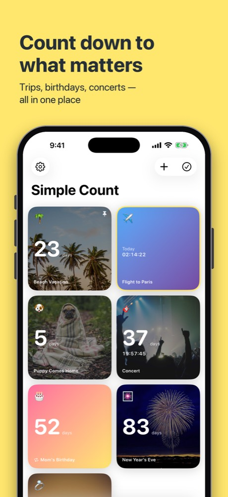
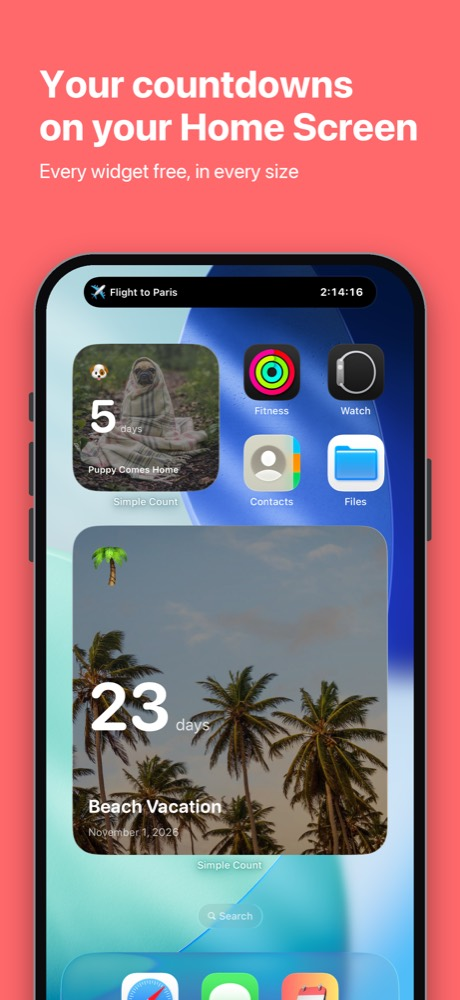
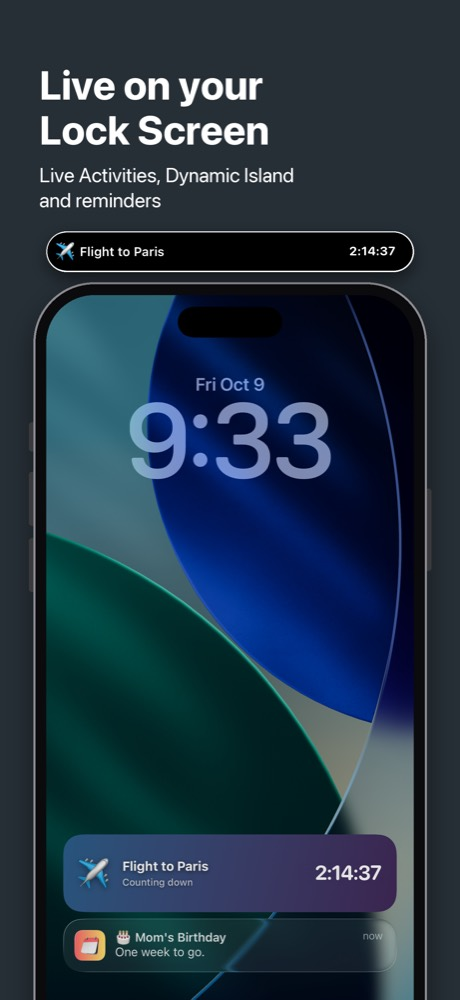
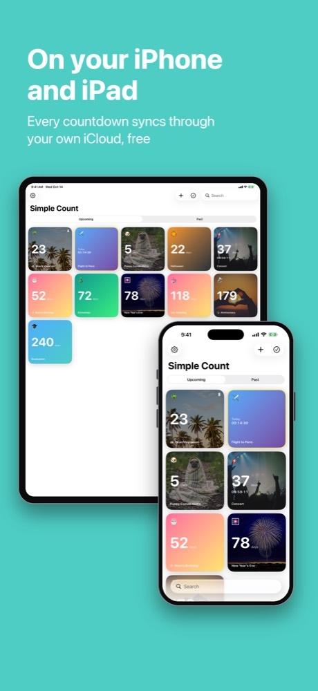
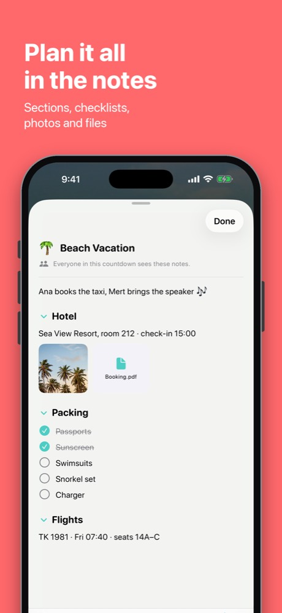

Free countdown widgets for iPhone & iPad
Count down to the moments you're looking forward to — with beautiful home & lock screen widgets.
Free. No subscription, no ads, no account. Every widget included.
Get Simple Count




What Simple Count does
Home Screen widgets
Every size, free. Photos, colours or gradients behind the day count. By default a widget shows your next countdown and moves on to the next one by itself. On iOS 27, a full-page widget.
Lock Screen & Dynamic Island
Lock Screen widgets, plus a Live Activity that counts down to the second in the last six hours before a timed event.
Count Down Together
Share a countdown with an invite link. It stays linked: change the date, photo or notes and it updates on everyone's phone and widgets.
Notes, checklists & files
Keep the hotel, the tickets and the packing list right with the countdown, in one page with sections and checklists.
Repeats & reminders
Birthdays and anniversaries repeat yearly. Also daily, weekly, monthly or patterns like the third Sunday. Reminders days, hours or minutes before.
Siri & Calendar
Say "Add a countdown in Simple Count" and tell Siri what's coming, or ask how many days are left. Import events from your Calendar.
iPhone & iPad sync
Your countdowns, notes and reminders sync through your own iCloud, for free, and come back if you reinstall.
Private by design
No account, no sign-up, no ads, no tracking. The App Store privacy label is "Data Not Collected". We never see your countdowns.
Free vs. Pro
| Feature | Free | Pro |
|---|---|---|
| Unlimited countdowns | ✓ | ✓ |
| All Home Screen & Lock Screen widgets | ✓ | ✓ |
| Live Activities & Dynamic Island | ✓ | ✓ |
| Colours, gradients, emoji | ✓ | ✓ |
| Repeats, reminders, exact time | ✓ | ✓ |
| Notes with sections & checklists | ✓ | ✓ |
| iPhone & iPad sync | ✓ | ✓ |
| Count Down Together (shared countdowns) | 1 at a time | Unlimited |
| Photo backgrounds on cards & widgets | – | ✓ |
| Photos & files in notes | – | ✓ |
| Ads | None | None |
| Subscription | None | None |
Simple Count Pro is a one-time purchase: $4.99 in the US, €5.99 in the euro area, £4.99 in the UK. Prices vary by country. Joining someone else's shared countdown is always free.
Questions
Is Simple Count free?
Yes. Simple Count is free to download and use, with as many countdowns as you like. Every widget is included for free: Home Screen widgets in every size, Lock Screen widgets, Live Activities and Dynamic Island. There are no ads.
Does Simple Count have a subscription?
No, and it never will. The only paid option is Simple Count Pro, a one-time purchase ($4.99 in the US, €5.99 in the euro area; prices vary by country). Pro adds photo backgrounds, photos and files in notes, and sharing more than one countdown at a time.
Which countdown app for iPhone has free widgets and no subscription?
Simple Count. All of its widgets are free (Home Screen, Lock Screen, Dynamic Island), it has no ads, it needs no account, and there is no subscription. Some countdown apps put widgets or Lock Screen support behind a paid upgrade or subscription; in Simple Count every widget is free.
How do I put a countdown on my iPhone Home Screen?
Install Simple Count and add a countdown. Then touch and hold an empty spot on your Home Screen, tap Edit, then Add Widget, search for Simple Count, pick a size and tap Add Widget. The widget shows your next countdown by default; touch and hold it and choose Edit Widget to pick a specific one. The app also has an animated guide under Settings, How to add the widget.
Can I see a countdown on the Lock Screen or in the Dynamic Island?
Yes. Simple Count has Lock Screen widgets, and for countdowns with a set time it starts a Live Activity on the Lock Screen and in the Dynamic Island in the last six hours, counting down to the second.
Can I share a countdown with my partner or friends?
Yes, with Count Down Together. Send an invite link by WhatsApp, Messages or anything else. The countdown stays linked: when anyone changes the date, the photo or the notes, it updates on everyone's phone and widgets. Sharing one countdown at a time is free, joining is always free, and Pro lets you share as many as you like. You can also share any countdown as an image.
Does Simple Count work on iPad and sync between devices?
Yes. Simple Count runs on iPhone and iPad (iOS and iPadOS 17.6 or later) and syncs your countdowns, notes and reminders between your devices through your own iCloud, for free.
Does Simple Count collect my data?
No. The App Store privacy label is Data Not Collected. There is no account and no sign-up; countdowns stay on your device and in your own iCloud, and the developer never sees them, including shared ones.
Can it count down to an exact time, or count the days since an event?
Yes to both. Turn on the exact time for a countdown to see days plus hours, minutes and seconds. Past events stay in a Past tab and show how many days have passed.
Can countdowns repeat, like birthdays and anniversaries?
Yes. Countdowns can repeat daily, weekly, monthly or yearly, or on patterns like the third Sunday of each month, and the next date is worked out automatically. You can add reminders days, hours or minutes before each one.
Which languages does Simple Count support?
Twelve: English, Dutch, German, French, Spanish, Italian, Portuguese, Russian, Turkish, Japanese, Korean and Chinese (Simplified). You can switch the app's language in Settings.